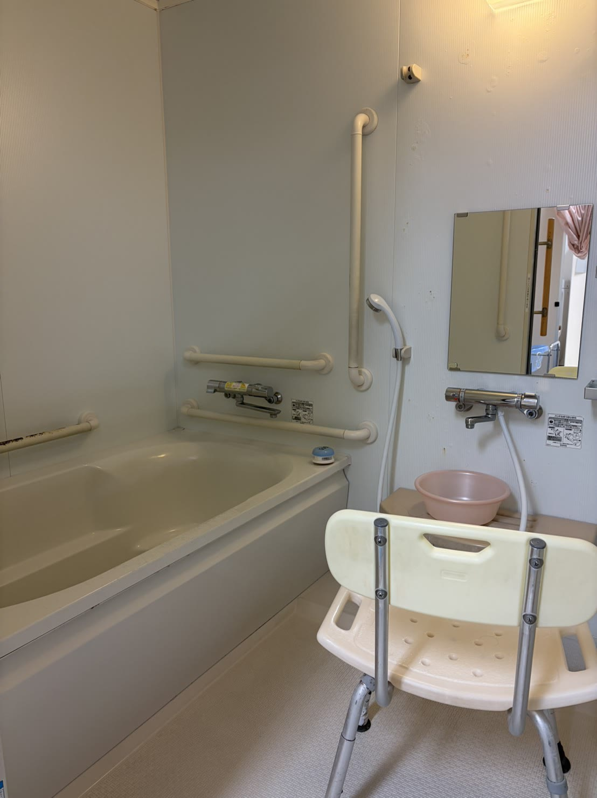

FOR CARE MANAGERS
紹介前に知りたいことを、
紹介前に知りたいことを、
ここで確認できます。
定員18名の地域密着型通所介護。個浴、リラクゼーション、レクリエーション、無理なく続ける運動を組み合わせます。
定員18名
サービス提供時間9:30〜14:30
営業日月〜土
通常の実施地域金沢市
AVAILABILITY
施設・お風呂の空き状況
千日町店の入力表から読み込みます。表示できない場合は電話確認へ切り替わります。
| 曜日 | 施設の空き | お風呂の空き |
|---|
PRICE
料金シミュレーター
利用区分や回数を選ぶと、1か月の目安を表示します。2026年6月版の重要事項説明書に基づく試算です。
料金についての大切なお知らせ通所の結果には、個別機能訓練加算Ⅱ・科学的介護推進体制加算・ADL維持等加算Ⅱの月額目安を含みます。利用日数、加算の算定状況、端数処理、同一建物減算などにより実際の請求額は変わります。正式な金額は契約時・ケアプラン作成時に必ずご確認ください。
SERVICE CODES
主なサービスコード
事業所番号：1770104576。紹介・請求時の照合用です。
| 区分 | 内容 | サービスコード |
|---|---|---|
| 地域密着型通所介護 | 3〜4時間／4〜5時間／5〜6時間、各要介護1〜5 | 78 1241〜1245／78 1246〜1250／78 1341〜1345 |
| 介護予防型 | 週1回程度／週2回程度 | A6 1111／A6 1121 |
| 主な加算・減算 | 入浴介助加算Ⅰ／個別機能訓練加算Ⅱ／科学的介護推進体制加算／ADL維持等加算Ⅱ／送迎減算 | 78 5301／78 5052／78 6361／78 6339／78 5612 |
根拠：厚生労働省の介護サービスコード表、金沢市総合事業サービスコード表（令和8年6月1日以降）。実際の算定は個別のケアプランと算定状況によります。

PRACTICAL INFORMATION
事業所情報
| 事業所名 | プラトーリハセンター千日町5号店 |
|---|---|
| 事業所番号 | 1770104576 |
| サービス | 地域密着型通所介護・介護予防型通所サービス |
| 定員 | 18名 |
| 営業時間 | 8:00〜17:00 |
| 提供時間 | 9:30〜14:30 |
| 休み | 日曜日、事業所が定めた祝日、8月14〜16日、12月31日〜1月3日 |
| 実施地域 | 金沢市 |
| 所在地 | 石川県金沢市千日町9番27号 グリーンソサエティ犀川1階 |
| 電話 | 076-220-6386 |
| FAX | 076-220-6387 |
出典：2026年4月版 運営規程、2026年6月版 重要事項説明書・契約書
CONTACT
空き状況・受け入れ条件はお電話で確定します。
「ホームページを見た」とお伝えください。